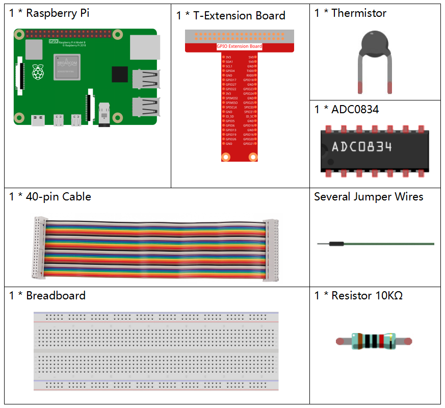
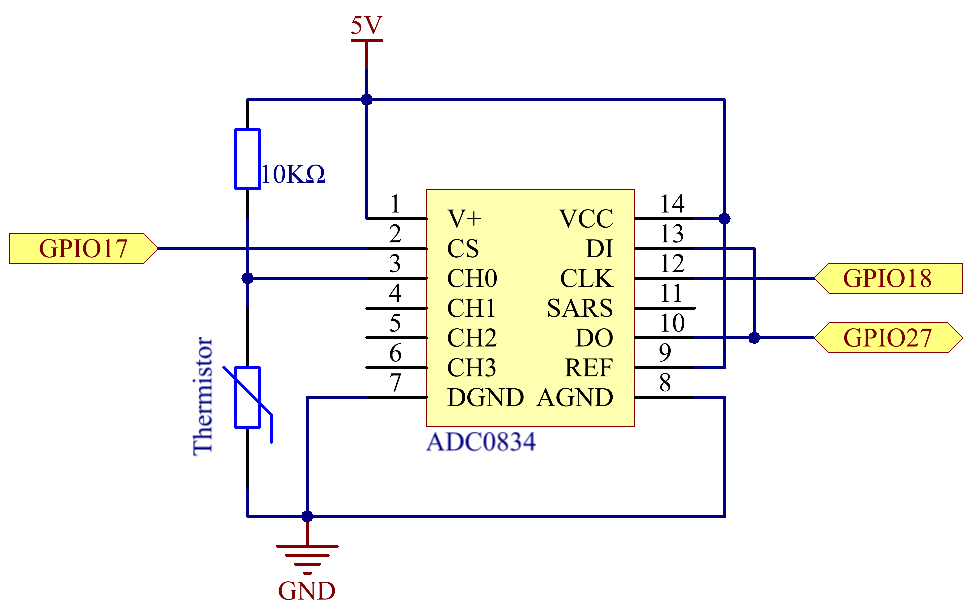
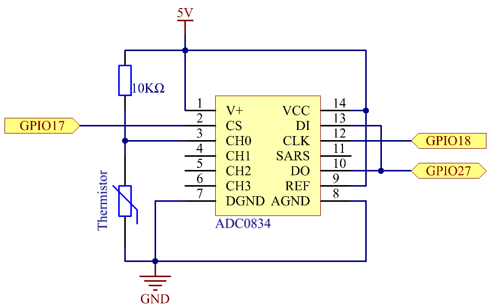

Note
Bonjour et bienvenue dans la communauté SunFounder Raspberry Pi & Arduino & ESP32 Enthusiasts sur Facebook ! Plongez dans l’univers du Raspberry Pi, Arduino et ESP32 avec d’autres passionnés.
Pourquoi nous rejoindre ?
Support d’experts : Résolvez vos problèmes après-vente et défis techniques grâce à l’aide de notre communauté et de notre équipe.
Apprendre & partager : Échangez des astuces et des tutoriels pour améliorer vos compétences.
Aperçus exclusifs : Accédez en avant-première aux nouvelles annonces de produits et aux aperçus exclusifs.
Réductions spéciales : Profitez de réductions exclusives sur nos derniers produits.
Promotions festives et concours : Participez à des concours et des promotions spéciales durant les fêtes.
👉 Prêt à explorer et créer avec nous ? Cliquez sur [Ici] et rejoignez-nous dès aujourd’hui !
2.2.2 Thermistor
Introduction
Tout comme la photo-résistance permet de détecter la lumière, une thermistance est un dispositif électronique sensible à la température pouvant être utilisé pour des fonctions de contrôle de température, comme la réalisation d’une alarme thermique.
Composants
Principe
Une thermistance est une résistance thermosensible qui présente un changement précis et prévisible de résistance en fonction des variations de température. L’ampleur de ce changement dépend de sa composition spécifique. Les thermistances appartiennent au groupe des composants passifs, qui, contrairement aux composants actifs, ne peuvent pas amplifier un signal ou fournir un gain de puissance à un circuit.
La thermistance est un élément sensible, et elle existe en deux types : à coefficient de température négatif (CTN) et à coefficient de température positif (CTP). Dans ce projet, nous utilisons une thermistance CTN, dont la résistance diminue avec l’augmentation de la température.

Le principe est que la résistance de la thermistance CTN change en fonction de la température ambiante. Elle détecte ainsi la température en temps réel. Lorsque la température augmente, la résistance de la thermistance diminue. Ensuite, les données de tension sont converties en valeurs numériques par l’adaptateur A/D, permettant d’afficher la température en degrés Celsius ou Fahrenheit via la programmation.
Dans cette expérience, une thermistance et une résistance de pull-up de 10k ohms sont utilisées. Chaque thermistance a une résistance nominale. Ici, elle est de 10k ohms, mesurée à 25 degrés Celsius.
Voici la relation entre la résistance et la température :
RT =RN expB(1/TK – 1/TN)
RT est la résistance de la thermistance CTN à la température TK.
RN est la résistance de la thermistance CTN à la température nominale TN. Ici, la valeur de RN est de 10k.
TK est la température en kelvins (K). Ici, la valeur de TKest 273,15 + degrés Celsius.
TN est la température nominale en kelvins (K), ici la valeur de TN est 273,15 + 25.
Le B(bêta), constant de matériau de la thermistance CTN, est aussi appelé indice de sensibilité thermique, avec une valeur de 3950.
exp désigne l’exponentielle, et la base de l’exponentielle, e, est un nombre naturel d’environ 2,7.
La formule convertie devient : TK=1/(ln(RT/RN)/B+1/TN), ce qui permet d’obtenir la température en kelvins. En soustrayant 273,15, on obtient la température en degrés Celsius.
Cette relation est une formule empirique et n’est précise que lorsque la température et la résistance se situent dans une plage effective.
Schéma de connexion
 

Procédures expérimentales
Étape 1 : Montez le circuit.

Pour les utilisateurs du langage C
Étape 2 : Accédez au dossier du code.
cd ~/davinci-kit-for-raspberry-pi/c/2.2.2/
Étape 3 : Compilez le code.
gcc 2.2.2_Thermistor.c -lwiringPi -lm
Note
L’option -lm permet de charger la bibliothèque mathématique. Ne l’oubliez pas, sinon une erreur pourrait survenir.
Étape 4 : Exécutez le fichier exécutable.
sudo ./a.out
Lorsque le code s’exécute, la thermistance détecte la température ambiante, qui sera affichée à l’écran une fois le calcul terminé.
Note
Si le programme ne fonctionne pas ou s’il y a un message d’erreur tel que « wiringPi.h: Aucun fichier ou répertoire de ce type », veuillez consulter C code is not working?.
Code
#include <wiringPi.h>
#include <stdio.h>
#include <math.h>
typedef unsigned char uchar;
typedef unsigned int uint;
#define ADC_CS 0
#define ADC_CLK 1
#define ADC_DIO 2
uchar get_ADC_Result(uint channel)
{
uchar i;
uchar dat1=0, dat2=0;
int sel = channel > 1 & 1;
int odd = channel & 1;
digitalWrite(ADC_CLK, 1);
delayMicroseconds(2);
digitalWrite(ADC_CLK, 0);
delayMicroseconds(2);
pinMode(ADC_DIO, OUTPUT);
digitalWrite(ADC_CS, 0);
// Bit de démarrage
digitalWrite(ADC_CLK,0);
digitalWrite(ADC_DIO,1); delayMicroseconds(2);
digitalWrite(ADC_CLK,1); delayMicroseconds(2);
// Mode à une seule extrémité
digitalWrite(ADC_CLK,0);
digitalWrite(ADC_DIO,1); delayMicroseconds(2);
digitalWrite(ADC_CLK,1); delayMicroseconds(2);
// ODD
digitalWrite(ADC_CLK,0);
digitalWrite(ADC_DIO,odd); delayMicroseconds(2);
digitalWrite(ADC_CLK,1); delayMicroseconds(2);
// Sélection
digitalWrite(ADC_CLK,0);
digitalWrite(ADC_DIO,sel); delayMicroseconds(2);
digitalWrite(ADC_CLK,1);
digitalWrite(ADC_DIO,1); delayMicroseconds(2);
digitalWrite(ADC_CLK,0);
digitalWrite(ADC_DIO,1); delayMicroseconds(2);
for(i=0;i<8;i++)
{
digitalWrite(ADC_CLK,1); delayMicroseconds(2);
digitalWrite(ADC_CLK,0); delayMicroseconds(2);
pinMode(ADC_DIO, INPUT);
dat1=dat1<<1 | digitalRead(ADC_DIO);
}
for(i=0;i<8;i++)
{
dat2 = dat2 | ((uchar)(digitalRead(ADC_DIO))<<i);
digitalWrite(ADC_CLK,1); delayMicroseconds(2);
digitalWrite(ADC_CLK,0); delayMicroseconds(2);
}
digitalWrite(ADC_CS,1);
pinMode(ADC_DIO, OUTPUT);
return(dat1==dat2) ? dat1 : 0;
}
int main(void)
{
unsigned char analogVal;
double Vr, Rt, temp, cel, Fah;
if(wiringPiSetup() == -1){ // en cas d'échec de l'initialisation de wiringPi, affiche un message à l'écran
printf("setup wiringPi failed !");
return 1;
}
pinMode(ADC_CS, OUTPUT);
pinMode(ADC_CLK, OUTPUT);
while(1){
analogVal = get_ADC_Result(0);
Vr = 5 * (double)(analogVal) / 255;
Rt = 10000 * (double)(Vr) / (5 - (double)(Vr));
temp = 1 / (((log(Rt/10000)) / 3950)+(1 / (273.15 + 25)));
cel = temp - 273.15;
Fah = cel * 1.8 +32;
printf("Celsius: %.2f C Fahrenheit: %.2f F\n", cel, Fah);
delay(100);
}
return 0;
}
Explication du code
#include <math.h>
Il s’agit d’une bibliothèque numérique en C qui déclare un ensemble de fonctions pour calculer des opérations et transformations mathématiques courantes.
analogVal = get_ADC_Result(0);
Cette fonction est utilisée pour lire la valeur du thermistor.
Vr = 5 * (double)(analogVal) / 255;
Rt = 10000 * (double)(Vr) / (5 - (double)(Vr));
temp = 1 / (((log(Rt/10000)) / 3950)+(1 / (273.15 + 25)));
cel = temp - 273.15;
Fah = cel * 1.8 +32;
printf("Celsius: %.2f C Fahrenheit: %.2f F\n", cel, Fah);
Ces calculs permettent de convertir les valeurs du thermistor en degrés Celsius.
Vr = 5 * (double)(analogVal) / 255;
Rt = 10000 * (double)(Vr) / (5 - (double)(Vr));
Ces deux lignes de code calculent la répartition de la tension avec la valeur analogique lue afin d’obtenir Rt (la résistance du thermistor).
temp = 1 / (((log(Rt/10000)) / 3950)+(1 / (273.15 + 25)));
Ce code fait référence à l’insertion de Rt dans la formule TK=1/(ln(RT/RN)/B+1/TN) pour obtenir la température en Kelvin.
temp = temp - 273.15;
Conversion de la température en Kelvin en degrés Celsius.
Fah = cel * 1.8 +32;
Conversion des degrés Celsius en degrés Fahrenheit.
printf("Celsius: %.2f C Fahrenheit: %.2f F\n", cel, Fah);
Affiche la température en degrés Celsius et Fahrenheit ainsi que leurs unités à l’écran.
Pour les utilisateurs de Python
Étape 2 : Accédez au dossier du code.
cd ~/davinci-kit-for-raspberry-pi/python/
Étape 3 : Exécutez le fichier exécutable
sudo python3 2.2.2_Thermistor.py
Une fois le code exécuté, la thermistance détecte la température ambiante, qui sera affichée à l’écran après le calcul du programme.
Code
Note
Vous pouvez modifier/réinitialiser/copier/exécuter/arrêter le code ci-dessous. Mais avant cela, vous devez vous rendre au chemin source du code, comme davinci-kit-for-raspberry-pi/python.
import RPi.GPIO as GPIO
import ADC0834
import time
import math
def init():
ADC0834.setup()
def loop():
while True:
analogVal = ADC0834.getResult()
Vr = 5 * float(analogVal) / 255
Rt = 10000 * Vr / (5 - Vr)
temp = 1/(((math.log(Rt / 10000)) / 3950) + (1 / (273.15+25)))
Cel = temp - 273.15
Fah = Cel * 1.8 + 32
print ('Celsius: %.2f C Fahrenheit: %.2f F' % (Cel, Fah))
time.sleep(0.2)
if __name__ == '__main__':
init()
try:
loop()
except KeyboardInterrupt:
ADC0834.destroy()
Explication du code
import math
Il s’agit d’une bibliothèque numérique qui déclare un ensemble de fonctions pour effectuer des calculs mathématiques courants.
analogVal = ADC0834.getResult()
Cette fonction est utilisée pour lire la valeur du thermistor.
Vr = 5 * float(analogVal) / 255
Rt = 10000 * Vr / (5 - Vr)
temp = 1/(((math.log(Rt / 10000)) / 3950) + (1 / (273.15+25)))
Cel = temp - 273.15
Fah = Cel * 1.8 + 32
print ('Celsius: %.2f °C Fahrenheit: %.2f ℉' % (Cel, Fah))
Ces calculs permettent de convertir les valeurs du thermistor en degrés Celsius et Fahrenheit.
Vr = 5 * float(analogVal) / 255
Rt = 10000 * Vr / (5 - Vr)
Ces deux lignes de code calculent la répartition de la tension avec la valeur analogique lue afin d’obtenir Rt (la résistance du thermistor).
temp = 1/(((math.log(Rt / 10000)) / 3950) + (1 / (273.15+25)))
Ce code fait référence à l’insertion de Rt dans la formule TK=1/(ln(RT/RN)/B+1/TN) pour obtenir la température en Kelvin.
temp = temp - 273.15
Conversion de la température en Kelvin en degrés Celsius.
Fah = Cel * 1.8 + 32
Conversion des degrés Celsius en degrés Fahrenheit.
print ('Celsius: %.2f °C Fahrenheit: %.2f ℉' % (Cel, Fah))
Affiche les degrés Celsius, les degrés Fahrenheit et leurs unités à l’écran.
Image du phénomène